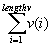

[Previous Chapter] [Table of Contents]
When functions are called with fewer than the number of expected arguments, the shortfall is made up with nulls. In some cases, null arguments make perfect sense; in other cases, such as with div or get, they generate errors. Many functions merely return null when presented with a null argument.

When v is null, the sum sums to the additive identity, 0. Similarly, we have for mul,
andE is another example of well-defined behavior. The following is necessarily true:
(andE cat [a,b]) === (andE a and andE b)
If b is null, then andE b must evaluate to 1, which determines the behavior of andE with a null argument. Similar reasoning may be applied to orE.
SVL tasks can be created for executing individual functions and scripts, or for evaluating expressions. Tasks can also be created using forking routines. Task forking is needed, for example, when implementing monitoring routines or when running a task that must not fail but is required to perform operations that might.
Tasks have associated environment variables which may be queried and set.
Integer arithmetic (iadd, isub, imul) should only be used when space and memory are at a premium, and when the data are known to be integer (for instance, when the data are vector indices). Floating point arguments will be rounded before calculations are done. There is no integer divide.
For more on numbers, see Numeric Data.
Each function call has a significant overhead associated with it, in addition to its computing time. Thus, when the vectors to be manipulated are relatively short in length, it is the calling overhead which dominates the running time, whereas when the vectors are long, it is the actual computing time which dominates. So, if your vectors are short, it is particularly important to minimize the number of function calls so as to minimize the overhead. However, keeping the number of calls to a minimum is generally a good rule of thumb no matter what the length of the vector.
Memory considerations become significant when handling large amounts of data. However, the limitations of memory capacity can be felt even when not manipulating long vectors. In general, memory requirements scale proportionally with the amount of parallelization achieved. This is because parallel processing distributes work over memory so that the product of the parallel running time and the amount of memory consumed are equal to the work complexity (sequential runtime). There is thus a tradeoff between speed and memory. This suggests that unless you have a very large amount of memory indeed, you should not try to turn an 0(n3)algorithm into one that is 0(LOG n).
When vectors are so large that computational memory requirements exceed the capacity of the machine on which the computations are being run, one-line computations must be divided up over several lines of code. For example, in matrix multiplication, a loop could be used to step through each column or row of one of the matrices. Although in this manual we have frequently admonished against using loops for stepping through data in precisely this manner, this is an example of a case in which the use of a loop is justified.
for i = 1, length m1 loop
m(i) = add ( m1(i) * m2 );
endloop
This computation requires a chunk of memory whose size is the dimension of m1(i) times the dimensions of m2.
In SVL, for purposes of thrift, memory allocation is delayed until absolutely necessary (this optimization has not yet been fully implemented); for example, copying a vector does not perform any allocation. Thus,
a = igen 20;
b = a;
results in both a and b pointing to the same location. As soon as any modification is done on a vector that is pointed to by more than one variable, new memory is allocated. (Although for now, some allocations are still performed even when memory is uniquely associated with one variable.)
Note: This only applies to local vectors. Global vectors are always copied before modification.
Here are some rules of thumb to use when coding in SVL for speed: